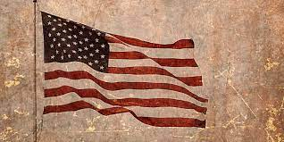
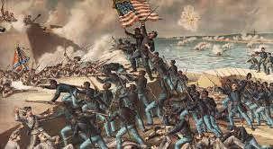
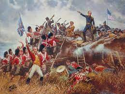
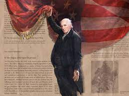

click to go back home
america historical
"American history" redirects here. For the history of the continents, see History of the Americas.
Further information: Economic history of the United States
The history of the lands that became the United States began with the arrival of the first people in the Americas around 15,000 BC. Numerous indigenous cultures formed, and many saw transformations in the 16th century away from more densely populated lifestyles and towards reorganized polities elsewhere. The European colonization of the Americas began in the late 15th century, however most colonies in what would later become the United States were settled after 1600. By the 1760s, the thirteen British colonies contained 2.5 million people and were established along the Atlantic Coast east of the Appalachian Mountains. The Southern Colonies built an agricultural system on slave labor, importing slaves from Africa for this purpose. After defeating France, the British government imposed a series of taxes, including the Stamp Act of 1765, rejecting the colonists' constitutional argument that new taxes needed their approval. Resistance to these taxes, especially the Boston Tea Party in 1773, led to Parliament issuing punitive laws designed to end self-government. Armed conflict began in Massachusetts in 1775.
In 1776, in Philadelphia, the Second Continental Congress declared the independence of the colonies as the "United States". Led by General George Washington, it won the Revolutionary War. The peace treaty of 1783 established the borders of the new sovereign state. The Articles of Confederation established a central government, but it was ineffectual at providing stability as it could not collect taxes and had no executive officer. A convention wrote a new Constitution that was adopted in 1789 and a Bill of Rights was added in 1791 to guarantee inalienable rights. With Washington as the first president and Alexander Hamilton his chief adviser, a strong central government was created. Purchase of the Louisiana Territory from France in 1803 doubled the size of the United States.
Encouraged by the notion of manifest destiny, the United States expanded to the Pacific Coast. While the nation was large in terms of area, its population in 1790 was only four million. Westward expansion was driven by a quest for inexpensive land for yeoman farmers and slave owners. The expansion of slavery was increasingly controversial and fueled political and constitutional battles, which were resolved by compromises. Slavery was abolished in all states north of the Mason–Dixon line by 1804, but states in the south continued the institution, to support the kinds of large scale agriculture that dominated the southern economy. Precipitated by the election of Abraham Lincoln as president in 1860, the Civil War began as the southern states seceded from the Union to form their own pro-slavery country, the Confederate States of America. The defeat of the Confederates in 1865 led to the abolition of slavery. In the Reconstruction era following the war, legal and voting rights were extended to freed male slaves. The national government emerged much stronger, and gained explicit duty to protect individual rights. However, when white southern Democrats regained their political power in the South in 1877, often by paramilitary suppression of voting, they passed Jim Crow laws to maintain white supremacy, as well as new state constitutions that legalized discrimination based on race and prevented most African Americans from participating in public life.
The United States became the world's leading industrial power at the turn of the 20th century, due to an outburst of entrepreneurship and industrialization and the arrival of millions of immigrant workers and farmers. A national railroad network was completed and large-scale mines and factories were established. Mass dissatisfaction with corruption, inefficiency, and traditional politics stimulated the Progressive movement, from the 1890s to the 1920s, leading to reforms, including the federal income tax, direct election of Senators, granting of citizenship to many indigenous people, alcohol prohibition, and women's suffrage. Initially neutral during World War I, the United States declared war on Germany in 1917 and funded the Allied victory the following year. After the prosperous Roaring Twenties, the Wall Street Crash of 1929 marked the onset of the decade-long worldwide Great Depression. President Franklin D. Roosevelt implemented his New Deal programs, including relief for the unemployed, support for farmers, social security, and a minimum wage. The New Deal defined modern American liberalism.[1] Following the Japanese attack on Pearl Harbor, the United States entered World War II and financed the Allied war effort, and helped defeat Nazi Germany and Fascist Italy in the European theater. Its involvement culminated in using newly American invented nuclear weapons on Hiroshima and Nagasaki to defeat Imperial Japan in the Pacific War.

This article is part of a series on the
Culture of the
United States
Greater coat of arms of the United States.svg
Society
HistoryLanguagePeople race and ethnicityReligion
Arts and literature
ArchitectureArtDanceFashionLiterature comicspoetryMusicSculptureTheater
Other
CuisineFestivalsFolkloreMedia newspapersradiocinemaTVInternetAmericanaMythologySports
Symbols
FlagGreat SealMonumentsMottoAnthemBirdWorld Heritage Sites
Flag of the United States (19-10).svg
United States portal
vte
The United States and the Soviet Union emerged as rival superpowers in the aftermath of World War II. During the Cold War, the two countries confronted each other indirectly in the arms race, the Space Race, propaganda campaigns, and proxy wars. In the 1960s, in large part due to the strength of the civil rights movement, another wave of social reforms was enacted which enforced the constitutional rights of voting and freedom of movement to African Americans. The Cold War ended when the Soviet Union was officially dissolved, leaving the United States as the world's sole superpower. Foreign policy after the Cold War has often focused on conflicts in the Middle East, especially after the September 11 attacks. Early in the 21st century, the United States experienced the Great Recession and the COVID-19 pandemic, which had a negative effect on the local economy.
Prehistory
Main articles: Prehistory of the United States, History of Native Americans in the United States, and Pre-Columbian era
See also: Native Americans in the United States
Approximate location of the ice-free corridor and specific Paleoindian sites (Clovis theory)
It is not definitively known how or when Native Americans first settled the Americas and the present-day United States. The prevailing theory proposes that people from Eurasia followed game across Beringia, a land bridge that connected Siberia to present-day Alaska during the Ice Age, and then spread southward throughout the Americas. This migration may have begun as early as 30,000 years ago[2] and continued through to about 10,000 years ago, when the land bridge became submerged by the rising sea level caused by the melting glaciers.[3] These early inhabitants, called Paleo-Indians, soon diversified into hundreds of culturally distinct nations and tribes.
This pre-Columbian era incorporates all periods in the history of the Americas before the appearance of European influences on the American continents, spanning from the original settlement in the Upper Paleolithic period to European colonization during the early modern period. While the term technically refers to the era before Christopher Columbus' voyage in 1492, in practice the term usually includes the history of American indigenous cultures until they were conquered or significantly influenced by Europeans, even if this happened decades or centuries after Columbus's initial landing.[4]
Paleo-Indians

Main article: Pre-Columbian North America
The cultural areas of pre-Columbian North America, according to Alfred Kroeber
By 10,000 BCE, humans were relatively well-established throughout North America. Originally, Paleo-Indians hunted Ice Age megafauna like mammoths, but as they began to go extinct, people turned instead to bison as a food source. As time went on, foraging for berries and seeds became an important alternative to hunting. Paleo-Indians in central Mexico were the first in the Americas to farm, starting to plant corn, beans, and squash around 8,000 BCE. Eventually, the knowledge began to spread northward. By 3,000 BCE, corn was being grown in the valleys of Arizona and New Mexico, followed by primitive irrigation systems and early villages of the Hohokam.[5][6]
One of the earlier cultures in the present-day United States was the Clovis culture, who are primarily identified by the use of fluted spear points called the Clovis point. From 9,100 to 8,850 BCE, the culture ranged over much of North America and also appeared in South America. Artifacts from this culture were first excavated in 1932 near Clovis, New Mexico. The Folsom culture was similar, but is marked by the use of the Folsom point.
A later migration identified by linguists, anthropologists, and archeologists occurred around 8,000 BCE. This included Na-Dene-speaking peoples, who reached the Pacific Northwest by 5,000 BCE.[7] From there, they migrated along the Pacific Coast and into the interior and constructed large multi-family dwellings in their villages, which were used only seasonally in the summer to hunt and fish, and in the winter to gather food supplies.[8] Another group, the Oshara tradition people, who lived from 5,500 BCE to 600 CE, were part of the Archaic Southwest.
Mound builders and pueblos
10:58
The First Corn, folktale from the Pawnee people. Maize was the staple crop for Native American agriculture.
Main articles: Mound Builders and Ancestral Puebloans
Grave Creek Mound, located in Moundsville, West Virginia, is one of the largest conical mounds in the United States. It was built by the Adena culture.
Monks Mound of Cahokia (UNESCO World Heritage Site) in summer
Cliff Palace, Mesa Verde National Park, a UNESCO World Heritage Site
The Adena began constructing large earthwork mounds around 600 BCE. They are the earliest known people to have been Mound Builders, however, there are mounds in the United States that predate this culture. Watson Brake is an 11-mound complex in Louisiana that dates to 3,500 BCE, and nearby Poverty Point, built by the Poverty Point culture, is an earthwork complex that dates to 1,700 BCE. These mounds likely served a religious purpose.
The Adenans were absorbed into the Hopewell tradition, a powerful people who traded tools and goods across a wide territory. They continued the Adena tradition of mound-building, with remnants of several thousand still in existence across the core of their former territory in southern Ohio. The Hopewell pioneered a trading system called the Hopewell Exchange System, which at its greatest extent ran from the present-day Southeast up to the Canadian side of Lake Ontario.[9] By 500 CE, the Hopewellians had too disappeared, absorbed into the larger Mississippian culture.
The Mississippians were a broad group of tribes. Their most important city was Cahokia, near modern-day St. Louis, Missouri. At its peak in the 12th century, the city had an estimated population of 20,000, larger than the population of London at the time. The entire city was centered around a mound that stood 100 feet (30 m) tall. Cahokia, like many other cities and villages of the time, depended on hunting, foraging, trading, and agriculture, and developed a class system with slaves and human sacrifice that was influenced by societies to the south, like the Mayans.[5]
In the Southwest, the Anasazi began constructing stone and adobe pueblos around 900 BCE.[10] These apartment-like structures were often built into cliff faces, as seen in the Cliff Palace at Mesa Verde. Some grew to be the size of cities, with Pueblo Bonito along the Chaco River in New Mexico once consisting of 800 rooms.[5]
Northwest and northeast
Main articles: Indigenous peoples of the Eastern Woodlands and Indigenous peoples of the Pacific Northwest Coast
The K'alyaan Totem pole of the Tlingit Kiks.ádi Clan, erected at Sitka National Historical Park to commemorate the lives lost in the 1804 Battle of Sitka
The indigenous peoples of the Pacific Northwest were likely the most affluent Native Americans. Many distinct cultural groups and political entities developed there, but they all shared certain beliefs, traditions, and practices, such as the centrality of salmon as a resource and spiritual symbol. Permanent villages began to develop in this region as early as 1,000 BCE, and these communities celebrated by the gift-giving feast of the potlatch. These gatherings were usually organized to commemorate special events such as the raising of a Totem pole or the celebration of a new chief.
In present-day upstate New York, the Iroquois formed a confederacy of tribal peoples in the mid-15th century, consisting of the Oneida, Mohawk, Onondaga, Cayuga, and Seneca. Their system of affiliation was a kind of federation, different from the strong, centralized European monarchies.[11][12][13] Each tribe had seats in a group of 50 sachem chiefs. It has been suggested that their culture contributed to political thinking during the development of the United States government. The Iroquois were powerful, waging war with many neighboring tribes, and later, Europeans. As their territory expanded, smaller tribes were forced further west, including the Osage, Kaw, Ponca, and Omaha peoples.[13][14]
Native Hawaiians
Main articles: Ancient Hawaii and Hawaiian Kingdom
The exact date for the settling of Hawaii is disputed but the first settlement most likely took place between 940 and 1130 CE.[15] Around 1200 CE, Tahitian explorers found and began settling the area as well establishing a new caste system. This marked the rise of the Hawaiian civilization, which would be largely separated from the rest of the world until the arrival of the British 600 years later.[16][17][18] Europeans under the British explorer James Cook arrived in the Hawaiian Islands in 1778, and within five years of contact, European military technology would help Kamehameha I conquer most of the island group, and eventually unify the islands for the first time; establishing the Hawaiian Kingdom.[19]
Puerto Rico
Main articles: History of Puerto Rico and Taino
The island of Puerto Rico has been settled for at least for 4,000 years dating back to the remains of Puerto Ferro man. Starting with the Ortoiroid culture, successive generations of native migrations arrived replacing or absorbing local populations. By the year 1000 Arawak people had arrived from South America via the Lesser Antilles, these settlers would become the Taíno encountered by the Spanish in 1493. Upon European contact a native population between 30,000 and 60,000 was likely, led by a single chief called a Cacique.[20] Colonization resulted in the decimation of the local inhabitants due to the harsh Encomienda system and epidemics caused by Old World diseases. Puerto Rico would remain a part of Spain until American annexation in 1898.[20]
Norse exploration
Main article: Norse colonization of North America
Leiv Eirikson Discovering America by Christian Krohg, 1893
The earliest recorded European mention of America is in a historical treatise by the medieval chronicler Adam of Bremen, circa 1075, where it is referred to as Vinland.[a] It is also extensively referred to in the 13th-century Norse Vinland sagas, which relate to events which occurred around 1000. Whilst the strongest archaeological evidence of the existence of Norse settlements in America is located in Canada, most notably at L'Anse aux Meadows and dated to circa 1000, there is significant scholarly debate as to whether Norse explorers also made landfall in New England and other east-coast areas.[22] In 1925, President Calvin Coolidge declared that a Norse explorer called Leif Erikson (c.970 – c.1020) was the first European to discover America.[23]
Early Native American tribal territories color-coded by linguistic group
European colonization
Main article: Colonial history of the United States
European territorial claims in North America, c. 1750
France
Great Britain
Spain
After a period of exploration sponsored by major European states, the first successful English settlement was established in 1607. Europeans brought horses, cattle, and hogs to the Americas and, in turn, took back maize, turkeys, tomatoes, potatoes, tobacco, beans, and squash to Europe. Many explorers and early settlers died after being exposed to new diseases in the Americas. However, the effects of new Eurasian diseases carried by the colonists, especially smallpox and measles, were much worse for the Native Americans, as they had no immunity to them. They suffered epidemics and died in very large numbers, usually before large-scale European settlement began. Their societies were disrupted and hollowed out by the scale of deaths.[24][25]
First settlements

Main article: European colonization of the Americas
Spanish contact
Main article: Spanish colonization of the Americas
Spanish explorers were the first Europeans to reach the present-day United States, after Christopher Columbus's expeditions (beginning in 1492) established possessions in the Caribbean, including the modern-day U.S. territories of Puerto Rico, and parts of the U.S. Virgin Islands. Juan Ponce de León landed in Florida in 1513.[26] Spanish expeditions quickly reached the Appalachian Mountains, the Mississippi River, the Grand Canyon,[27] and the Great Plains.[28]
20:05
The Letter of Christopher Columbus on the Discovery of America to King Ferdinand and Queen Isabella of Spain
In 1539, Hernando de Soto extensively explored the Southeast,[28] and a year later Francisco Coronado explored from Arizona to central Kansas in search of gold.[28] Escaped horses from Coronado's party spread over the Great Plains, and the Plains Indians mastered horsemanship within a few generations.[5] Small Spanish settlements eventually grew to become important cities, such as San Antonio, Albuquerque, Tucson, Los Angeles, and San Francisco.[29]
Dutch mid-Atlantic
Main article: Dutch colonization of the Americas
The Dutch West India Company sent explorer Henry Hudson to search for a Northwest Passage to Asia in 1609. New Netherland was established in 1621 by the company to capitalize on the North American fur trade. Growth was slow at first due to mismanagement by the Dutch and Native American conflicts. After the Dutch purchased the island of Manhattan from the Native Americans for a reported price of US$24, the land was named New Amsterdam and became the capital of New Netherland. The town rapidly expanded and in the mid-1600s it became an important trading center and port. Despite being Calvinists and building the Reformed Church in America, the Dutch were tolerant of other religions and cultures and traded with the Iroquois to the north.[30]
The colony served as a barrier to British expansion from New England, and as a result a series of wars were fought. The colony was taken over by Britain as New York in 1664 and its capital was renamed New York City. New Netherland left an enduring legacy on American cultural and political life of religious tolerance and sensible trade in urban areas and rural traditionalism in the countryside (typified by the story of Rip Van Winkle). Notable Americans of Dutch descent include Martin Van Buren, Theodore Roosevelt, Franklin D. Roosevelt, Eleanor Roosevelt and the Frelinghuysens.[30]
Swedish settlement
Main article: New Sweden
In the early years of the Swedish Empire, Swedish, Dutch, and German stockholders formed the New Sweden Company to trade furs and tobacco in North America. The company's first expedition was led by Peter Minuit, who had been governor of New Netherland from 1626 to 1631 but left after a dispute with the Dutch government, and landed in Delaware Bay in March 1638. The settlers founded Fort Christina at the site of modern-day Wilmington, Delaware, and made treaties with the indigenous groups for land ownership on both sides of the Delaware River.[31][32]
Over the following seventeen years, 12 more expeditions brought settlers from the Swedish Empire (which also included contemporary Finland, Estonia, and portions of Latvia, Norway, Russia, Poland, and Germany) to New Sweden. The colony established 19 permanent settlements along with many farms, extending into modern-day Maryland, Pennsylvania, and New Jersey. It was incorporated into New Netherland in 1655 after a Dutch invasion from the neighboring New Netherland colony during the Second Northern War.[31][32]
French and Spanish conflict

Giovanni da Verrazzano landed in North Carolina in 1524, and was the first European to sail into New York Harbor and Narragansett Bay. A decade later, Jacques Cartier sailed in search of the Northwest Passage, but instead discovered the Saint Lawrence River and laid the foundation for French colonization of the Americas in New France. After the collapse of the first Quebec colony in the 1540s, French Huguenots settled at Fort Caroline near present-day Jacksonville in Florida. In 1565, Spanish forces led by Pedro Menéndez destroyed the settlement and established the first European settlement in what would become the United States — St. Augustine.
After this, the French mostly remained in Quebec and Acadia, but far-reaching trade relationships with Native Americans throughout the Great Lakes and Midwest spread their influence. French colonists in small villages along the Mississippi and Illinois rivers lived in farming communities that served as a grain source for Gulf Coast settlements. The French established plantations in Louisiana along with settling New Orleans, Mobile and Biloxi.
British colonies
Further information: British colonization of the Americas
The Mayflower, which transported Pilgrims to the New World. During the first winter at Plymouth, about half of the Pilgrims died.[33]
The English, drawn in by Francis Drake's raids on Spanish treasure ships leaving the New World, settled the strip of land along the east coast in the 1600s. The first British colony in North America was established at Roanoke by Walter Raleigh in 1585, but failed. It would be twenty years before another attempt.[5]
The early British colonies were established by private groups seeking profit, and were marked by starvation, disease, and Native American attacks. Many immigrants were people seeking religious freedom or escaping political oppression, peasants displaced by the Industrial Revolution, or those simply seeking adventure and opportunity.
In some areas, Native Americans taught colonists how to plant and harvest the native crops. In others, they attacked the settlers. Virgin forests provided an ample supply of building material and firewood. Natural inlets and harbors lined the coast, providing easy ports for essential trade with Europe. Settlements remained close to the coast due to this as well as Native American resistance and the Appalachian Mountains that were found in the interior.